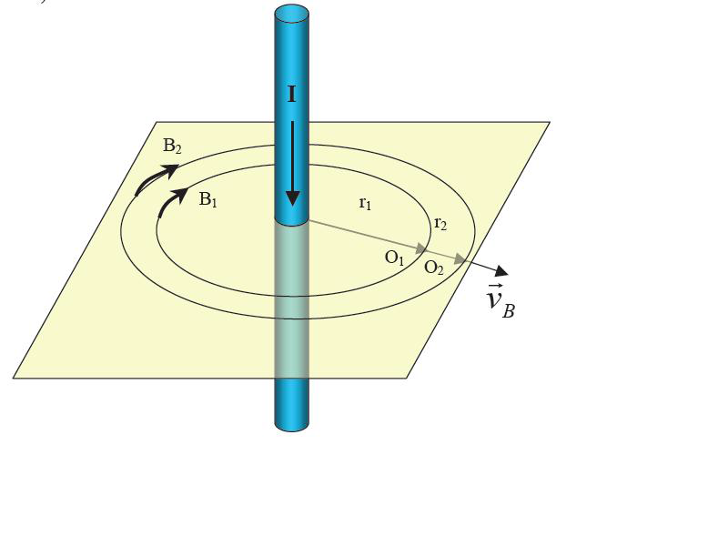

Кроме достаточно очевидных движений поля как целого (т.е. стационарных движений полей), которые, как мы выяснили только что, повторяют движения своего источника, существуют и менее очевидные. Это движения одних фрагментов поля относительно других его же фрагментов. Такого рода движения возникают, в частности, в случае изменения «силы» (интенсивности) источника поля во времени. В наличии указанных движений легко убедиться, вооружившись определением (1.43) и исследовав, например, поле бесконечно длинного провода с изменяющимся во времени током (рис. 1.2.).
Рис. 1.2. Движение магнитного поля переменного тока, протекающего в прямом проводе.
Диэлектрик, будучи изначально электрически нейтральным телом, во внешнем поле 0 E так и остаётся нейтральным, ибо никакие заряды на него не попали. Да и проводить он их не может. Откуда же взялось поле внутри, отличное от наружного? Оказывается, ориентация диполей по внешнему полю, например, в пластине, привела к тому, что на одной стороне пластины оказались положительные концы диполей, а на другой – отрицательные. Это эквивалентно тому, как если бы мы поместили равные и противоположные по знаку заряды на стороны пластины. Такие заряды называются связанными, поскольку они не могут быть разнесены, да и вообще не существуют в отрыве от своей среды, диэлектрика (рис. 2.1).
Какова же причина, приводящая эфир в движение вблизи тяготеющих масс? Несомненно, та же самая, которая приводит его в движение вблизи каждого протона или электрона. Причина должна быть электрической, как догадывались многие гениальные умы. И такая причина оказалась вполне тривиальной и, в сущности, известной уже более столетия. Выводя явления тяготения из электродинамических и механических представлений, мы не рассматривали отдельно тот факт, что вблизи столь геометрически малых зарядов, как протоны и электроны электрическое поле не только весьма велико по напряжённости, но и весьма неоднородно по пространству. Однако же всё это имеет место быть. В электродинамике давно и хорошо известен эффект втягивания любого диэлектрика в неоднородном поле по градиенту поля [2], [6]. А разве эфир (вакуум, пленум) не является диэлектриком?! Безусловно, является. Он даже технически используется именно как наилучший из всех известных диэлектриков в вакуумных конденсаторах. Он также может втягиваться источниками неоднородного электрического поля. Это вполне вероятная причина, приводящая эфир (вакуум, пленум) в движение вблизи зарядов, а следовательно, и макроскопических тел, состоящих из множества тех же микроскопических зарядов. Следовательно, взаимодействие между двумя гравитирующими телами происходит по механизму элементарные заряды тела 1 – эфир – элементарные заряды тела 2. И, разумеется, в обратную сторону. Такой взгляд проясняет, почему все предыдущие попытки объяснить гравитационное взаимодействие прямыми электродинамическими взаимодействиями зарядов потерпели неудачу. Среда (эфир, вакуум) является принципиально необходимым элементом для воссоздания картины такого лёгкого для наблюдения и столь трудного для понимания явления, как тяготение. Покажем теперь простой и красивый механизм возникновения ускоренного движения эфира (вакуума) вблизи заряженных тел.